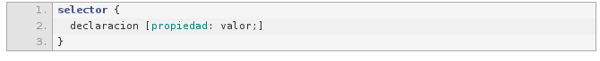
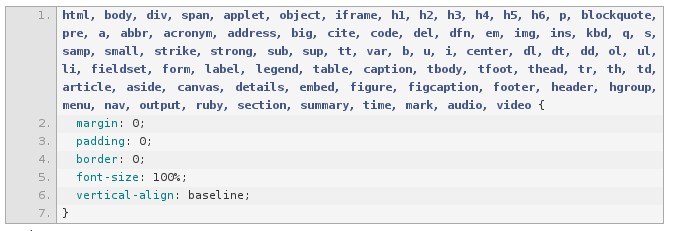
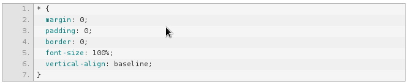
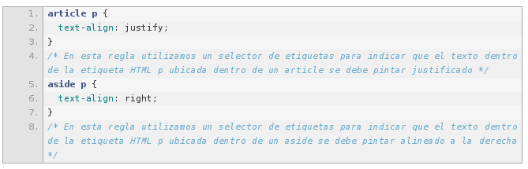
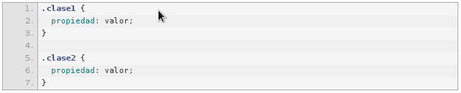
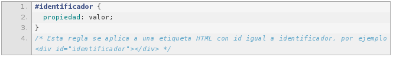
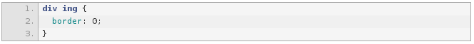

Nuestro código CSS3 no es más que una serie de reglas incluidas en un fichero. La mejor forma de entender una regla es como la imagen

Como puedes observar, una regla se compone de un selector y una declaración que está encerrada entre {} de forma que con la declaración decimos qué tiene que hacerse y es el selector el encargado de indicar aqué elemento de nuestro HTML se le debe aplicar la declaración.
La declaración es un conjunto de líneas separadas por ; (punto y coma) y cada línea (aunque pueden estar todas seguidas) se compone de una propiedad y un valor de forma que especificamos qué modificación visual queremos realizar (propiedad) y en qué medida (valor).
Los Selectores en CSS3
Hasta ahora hemos utilizado exclusivamente los llamados selectores de tipo o de etiqueta y los selectores descendentes, sin embargo tenemos varios tipos de selectores:
Selector universal.
Es muy poco utilizado, ya que aplicará el estilo a todas las etiquetas del documento. Sin embargo, es muy interesante a la hora de establecer una serie de valores básicos (como puede ser el color de la fuente, la familia y tamaño) de forma que se garantice un estilo uniforme y sea en reglas más concretas dónde se apliquen los estilos específicos. En el CSS de nuestro proyecto, podríamos utilizar el selector universal en la primera regla declarada, por lo que en vez de:

Lo mejor seria

Selector de tipo o etiqueta.
Como su propio nombre indica, el selector de etiqueta se utiliza para aplicar estilos en las etiquetas HTML, es lo que hemos estado realizando constantemente
Selector descendente.
El otro de los selectores que utilizamos en nuestro proyecto es el selector descendente. Nos permite establecer un estilo para una etiqueta que se encuentre dentro de otra, pudiendo tener un estilo para las etiquetas h2 que están dentro de un article y otro estilo para los h2 que están dentro de un aside

Selector de clase.
El selector de clase es, sin duda, el rey de los selectores. A las etiquetas HTML podemos ponerle un atributoclass y asignarle un valor:

Selector de ID.
Al igual que una etiqueta HTML tiene un atributo class, existe otro llamado id. Al atributo id sólo se le puede asignar un valor (no como en el class que podemos utilizar varios) y, además, dentro de un documento HTML no pueden existir dos (o más) etiquetas con el mismo id. El id es, como su propio indica, un identificador… y los identificadores tienen que ser únicos!!

Selector de hijos.
El selector de hijos es muy parecido al descendente, pero con una importantísima diferencia. Un selector descendente aplica un estilo a una etiqueta (clase, etc) que está contenida en otra, esto significa que este estilo:

Referencias:
Sintaxis CSS y Selectores. (s/f). Edu.sv. Recuperado el 19 de abril de 2022, de https://virtual.itca.edu.sv/Mediadores/dpw/sintaxis_css_y_selectores.html